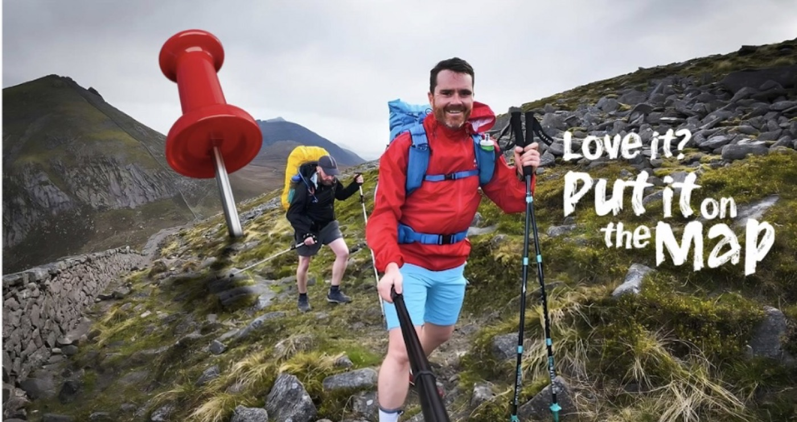

Tourism Northern Ireland — Love It? Put It On The Map
All selected workTourism Northern IrelandTravel / Content

Tourism Northern IrelandLove It? Put It On The MapTurning a place into something people can feel.
Full campaign story, imagery and results will be added here.
- Role
- Social · Content
- Brand
- Tourism Northern Ireland